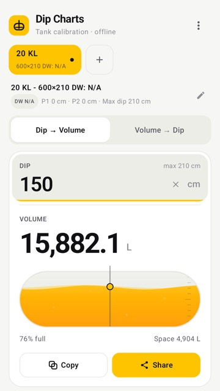
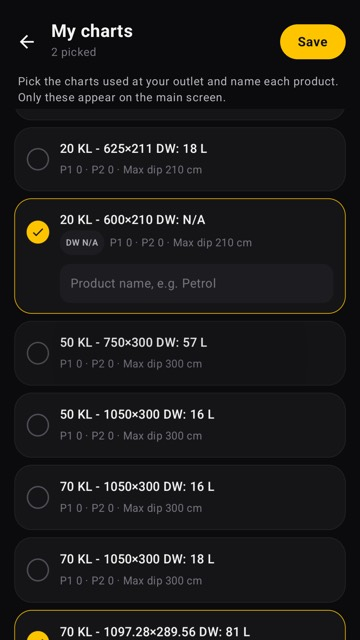

Wiz Dip Charts: टैंक डिप चार्ट कैलकुलेटर
डिप रॉड की रीडिंग सेंटीमीटर में लिखें और अपने अंडरग्राउंड टैंक के डिप चार्ट से लीटर में स्टॉक पढ़ें। पेट्रोल पंप डीलर, मैनेजर, DSM और सुपरवाइज़र के लिए।
Google Play पर पाएँ Read in English


ऐप क्या करता है
- डिप से लीटर: डिप cm में लिखें (दशमलव भी चलेंगे) और चार्ट से लीटर पाएँ।
- लीटर से डिप: लीटर लिखें और देखें कि डिप कितनी आनी चाहिए।
- 10, 15, 20, 50 और 70 KL टैंकों के 21 डिप चार्ट, IS 2166 चार्ट सहित।
- Find my chart: 50 cm और 100 cm के लीटर से अपना चार्ट ढूँढें।
- My charts: सिर्फ़ अपने टैंक रखें, नाम Petrol (MS), Diesel (HSD) या अपनी पसंद का।
- % भराव और बची हुई जगह, टैंकर मँगाने से पहले।
- Today's stock: आज के सभी टैंकों का स्टॉक, प्रोडक्ट के हिसाब से कुल। कॉपी करें या WhatsApp पर भेजें।
- बिना इंटरनेट चलता है। कोई अकाउंट या लॉगिन नहीं।
ऐप की भाषा अंग्रेज़ी है।
सवाल-जवाब
डिप से टैंक का स्टॉक कैसे निकालें?
अपने टैंक का चार्ट चुनें, डिप सेंटीमीटर में लिखें (87.4 जैसे दशमलव भी चलेंगे)। ऐप डिप चार्ट से लीटर में मात्रा, % भराव और बची हुई जगह दिखाता है।
कौन-कौन से टैंक साइज़ हैं?
10 KL, 15 KL, 20 KL, 50 KL और 70 KL हॉरिज़ॉन्टल टैंकों के 21 डिप चार्ट ऐप में पहले से मौजूद हैं, IS 2166 चार्ट सहित।
मेरा डिप चार्ट कौन-सा है, कैसे पता करें?
Find my chart खोलें और अपने पेपर चार्ट में 50 cm और 100 cm पर लिखे लीटर डालें। ऐप मिलता हुआ चार्ट ढूँढ देगा। अपने टैंक के स्वीकृत calibration chart से मिलान ज़रूर करें।
क्या यह बिना इंटरनेट चलता है?
हाँ। सारे चार्ट ऐप के अंदर हैं। आपकी डिप और स्टॉक आपके फ़ोन में ही रहते हैं। कोई अकाउंट या लॉगिन नहीं।
Wiz Labs के दूसरे ऐप
- Wiz Fuel Density: 15°C पर पेट्रोल और डीज़ल की डेंसिटी।
- Wiz Mock GPS: ऐप टेस्टिंग के लिए mock location।